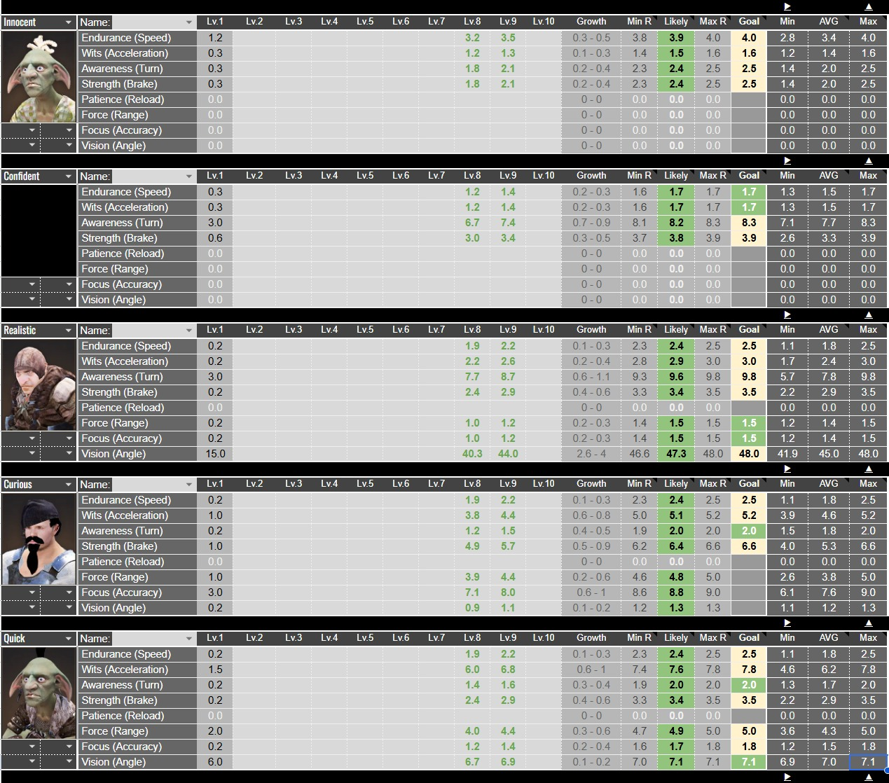

Ocean Stuff — for Sailors and stuff.
The following is based on my experience + facts from data miners and stuff. AFAIK, all these numbers should still be up to date as of current patch.
Anywho, let's get to it.
There really isn't another option here, especially if you're looking to do T6-T7 barters for silver down the line. Advance is the only option, unless you're willing to go full P2W with other carracks.. which I highly recommend AGAINST.
Just use all Innocents — you can't go wrong here. However, if you're like myself and don't want to get hassled, it's a good idea to use a Realistic sailor for the cannon slot, at the very least. This will let you have an easier time clearing the OE daily quests..and the random Maretta spawn that you might encounter.
Prioritize the ones that add +weight (cannons go 1st, to make OE dailies easier.. then plating).. Then the rest that add speed (sail, Figurehead). Trust me, weight is much more important when doing barters.
Build your Cannons first. Obviously for more damage.
Plating goes 2nd. This will increase your max durability and damage reduction.
Figurehead is 3rd. For more damage reduction.
The Panokseon generally outperforms Valor. The -1 second cannon cooldown advantage of the valor doesn't count for much because of the movement debuffs on all carracks. The Panokseon's durability advantage far, far outweighs that cannon cooldown time. The longer you're alive, the more DPS you can do.
The Volante is the 2nd choice in BBF.. due to its unfair base debuff advantage.. (If I remember correctly Volantes get debuffed by 20%..while the rest are debuffed by 30% of movement stats — speed, turn, accel, brake)
On average (assuming your base speed on a carrack is 200%) your Volante will be able to clear 150% speed EASILY.. while Panoks/Valors will struggle to even reach that 150% threshold.. They can only reach it when using the movement buff during BBF and the Volante is pretty much untouchable with that buff.
This unfair advantage will allow you to use more Realistic/Confident/Curious/Quick-witted sailors to balance out your spec.
Again — the longer you stay alive, the more DPS you'll be able to do.
You decide your overall sailor build, but there are a few set rules. All carracks have parts slots (Sail, wheel, cannon, etc). These parts give a x2 boost to certain sailor stats. With that said, here are the rules that you should follow.
Innocent sailors ONLY. No ifs, ands or buts. This slot increases your sailor's speed and acceleration stats.
Confident sailors ONLY. This slot increases your turn and brake stats.
This slot increases your Cannon stats (Firing range, firing angle, and accuracy). You have a few options here, and it is absolutely worth it to experiment to suit your taste or the situation. Your options are:
It is important to note that there is a hard-cap to the firing angle. From my experience, any more than 3 realistic sailors is worthless. Panokseon has the most cannon slots at 3.. so if you really want to, just add in 3 realistic sailors here and you're already good. If you add more, you're griefing yourself due to the huge hit in mobility that you'll be sacrificing.
Personally, having 1 realistic sailor is good enough.. then use Curious sailors to add more to your firing range.. Trust me, you'll feel the effect of firing range a whole lot more.
With those non-negotiables mentioned, the rest is more for experimentation.. Personally, I'll be filling out the rest of your sailor slots with Confident sailors.
Confident sailors give just about half the speed of an innocent sailor, but also for half the amount of crew slots. Meaning 2x Confidents = just about 1 Innocent in terms of speed.. However, the confident sailor wins out for the rest of the stats, making it the better choice.
There are certain break points that you need to reach for your sailors in order to be able to roll max stats for it when it reaches level 10. Personally, you don't need to do all that.. but getting an above average roll, or at least the level 8 break point, should be your goal.
Check out the image below for a quick overview. I've listed down the best sailor options, along with the stats that each needs to reach (at level 8 and 9) in order to get a chance of maxing out that particular stat.

Sailor stat breakpoints — Innocent, Confident, Realistic, Curious, and Quick.